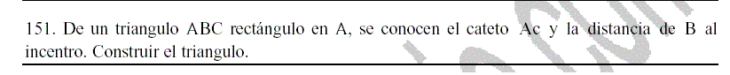

Problema 94.-
151. De un triángulo ABC rectángulo en A se conocen el cateto AC y la distancia de B al incentro.
Construir el triángulo.

Vargas Corzo, I. (2003): eltemario problema 151 de geometría III.